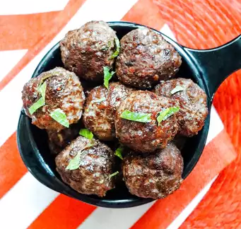

Turkish Meatballs (Köfte) Recipe

Description:
Turkish Meatballs, or Köfte, are a popular and flavorful dish made from ground meat and a mix of spices and herbs. These tender meatballs are perfect as a main dish or served with various sides like rice, yogurt, or a fresh salad. A staple in Turkish cuisine, they are easy to prepare and always a hit with family and guests.
Ingredients:
- 500g ground beef (or lamb, or a mix of both)
- 1 small onion, finely grated
- 2 cloves garlic, minced
- 1/2 cup breadcrumbs
- 1 egg
- 1 teaspoon cumin
- 1 teaspoon paprika (sweet or smoked)
- 1/2 teaspoon ground coriander (optional)
- 1/4 teaspoon ground black pepper
- 1 teaspoon dried oregano
- Salt to taste
- 2 tablespoons fresh parsley, chopped
- Olive oil (for frying)
Instructions:
- Prepare the Meat Mixture: In a large bowl, combine the ground meat, grated onion, minced garlic, breadcrumbs, egg, cumin, paprika, coriander, black pepper, oregano, and salt. Add chopped parsley and mix everything together thoroughly using your hands until well-combined.
- Shape the Meatballs: Take small portions of the mixture and shape them into oval or round meatballs, about the size of a golf ball.
- Cook the Meatballs: Heat olive oil in a large skillet over medium heat. Fry the meatballs in batches, turning occasionally, for about 7-10 minutes or until golden brown and cooked through.
- Drain and Serve: Once cooked, remove the meatballs from the skillet and place them on a plate lined with paper towels to drain excess oil. Serve hot with a side of rice, bulgur, or salad.